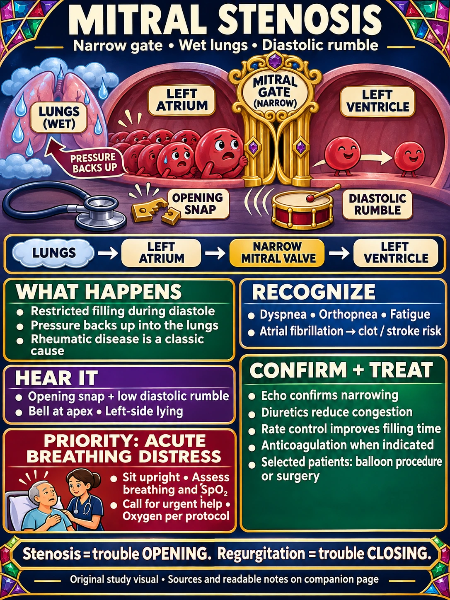
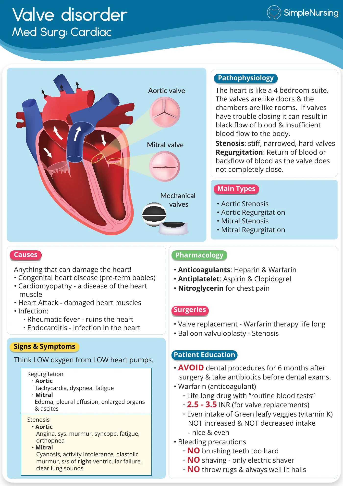

CARDIAC VALVE DISORDERS · NUR 198 M8 / EXAM 3 · BIO 280 M10
Mitral stenosis
Narrow gate. Wet lungs. Diastolic rumble.
The mitral valve cannot open fully, restricting blood flow from the left atrium to the left ventricle during diastole.
Priority: new breathing distress
Sit upright, assess breathing and oxygen saturation, and obtain urgent help. Give oxygen and prescribed treatment under the emergency protocol. Severe breathlessness, falling oxygen saturation or pink frothy sputum can signal pulmonary edema. New stroke symptoms also need emergency escalation. [4]
Study the pictures




Nursing care in readable text
1 · Understand the backup
Narrowing raises left-atrial and pulmonary venous pressure. Pulmonary congestion can follow; severe chronic disease can progress to pulmonary hypertension and right-sided failure. Rheumatic disease is the classic cause; calcification is another cause in older adults. [1] [2]
2 · Recognize the cues
Exertional dyspnea, orthopnea, fatigue and palpitations. Atrial enlargement favors atrial fibrillation and embolic stroke. A faster rate shortens filling time and may worsen symptoms. [3]
3 · Listen and confirm
Classic finding: an opening snap followed by a low-pitched diastolic rumble. Listen with the bell at the apex, with the patient lying on the left side. The snap may disappear with heavy calcification. Doppler echocardiography confirms and grades the narrowing. [2]
4 · Monitor and reassess
Trend breathing, oxygen saturation, lung sounds, pulse/rhythm, blood pressure, activity tolerance, intake/output and daily weight. Reassess after prescribed therapy. Escalate new respiratory distress or neurologic deficits; do not wait for a textbook murmur. [4]
5 · Know what treatment does
Diuretics relieve congestion; prescribed rate control allows more filling time. Anticoagulation is used for indications such as atrial fibrillation or atrial thrombus. In rheumatic mitral stenosis with AF, warfarin is used rather than a DOAC. [2]
Medicines do not open the narrowed valve. Suitable patients may need balloon commissurotomy or valve surgery. [1]
6 · Evaluate the response
Look for easier breathing, improving oxygenation and congestion, controlled rate, and better activity tolerance. After diuretics, follow ordered renal-function and electrolyte testing; after anticoagulants, monitor for bleeding and follow the monitoring plan. [4]
Match each picture to the fact
- Narrow jeweled gate: the mitral valve has trouble opening.
- Waiting blood cells: restricted left-atrium → left-ventricle filling.
- Wet lung clouds: pressure backs up into pulmonary circulation.
- Snapped latch + low drum: opening snap + diastolic rumble.
- Upright patient and nurse: assess and escalate acute breathing distress.
The “wet lungs” cue describes a possible complication; early disease can be asymptomatic. Stenosis means impaired opening; regurgitation means impaired closing. [3]
Read the original handout with these qualifications
- Lung sounds: the handout’s “clear lung sounds” line is not a rule. Pulmonary congestion and crackles can occur; right-sided failure may develop later. [2]
- Medication and INR notes: the handout combines several valve conditions and replacement-valve teaching. Do not apply every drug, lifelong-treatment statement or INR target to every person with mitral stenosis. Check the valve type, indication and prescribed plan.
- Dental care: antibiotic prophylaxis is for selected high-risk conditions and procedures, not all native mitral stenosis. Confirm dental timing after surgery with the treating team. [5]
Use your assigned textbook and instructor’s directions for course-specific questions. These notes distinguish the handout’s broad statements from the mitral-stenosis review.
Quick recall
Which phase produces the classic murmur?
Diastole—blood is passing through the narrowed mitral valve while the ventricle fills.
Why does a valve problem cause shortness of breath?
Left-atrial pressure rises and backs up toward the lungs, producing pulmonary congestion.
What comes first with sudden severe dyspnea?
Position upright, assess breathing and oxygenation, and get urgent help. Follow the emergency oxygen and treatment protocol.
Sources and related study guides
Clinical sources checked November 10, 2026. Original visual: built-in image generation, with a separate clinical review. Simple Nursing handout: its original shared PDF.